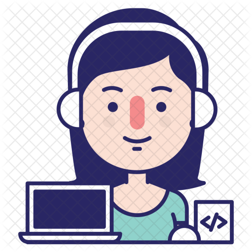

Hello, I'm Yati Gautam
and I'm a passionate

Work Experience

GirlScript Summer of Code internship [May-August 2023]
Gssoc is an open source internship program. I participated as a contributor in some
projects. I excelled in the project called AMUPEDIA, I created some responsive designs and
solved some UI errors during my contribution period. I learned how to handle deadlines and
task while coordinating with the mentors.This program helped me alot with my open source
contributions skill.
smart india hackathon [september-december 2023]
Smart India Hackathon was a program arranged by the Government of India to give a platform
to students to showcase their creation and innovation abilities while solving the real world
projects. I leaded my team as the head through 2 rounds of the program and learned quite
alot while working with my team and some experienced mentors, throughout
the journey.
c++ development [february-continuing 2024]
I created alot of personal projects through c++. I take c++ as my head language for my
projects and dsa questions. It's an advanced language that I have used throughly.
blogger
I am a part time blogger as well. I am keenly interested in writing blogs for people who
love to read and spread the knowledge. I have been officially blogging since 1.5 year and
it's being a great journey all together.
miscellaneous contributions
Apart from these I had contributed to various projects through open source and solved some
of their issues. I kept learning the new and advanced methodologies and unlearning the old
outdated patterns. It gave me a boost in my confidence and my knowledge as well.